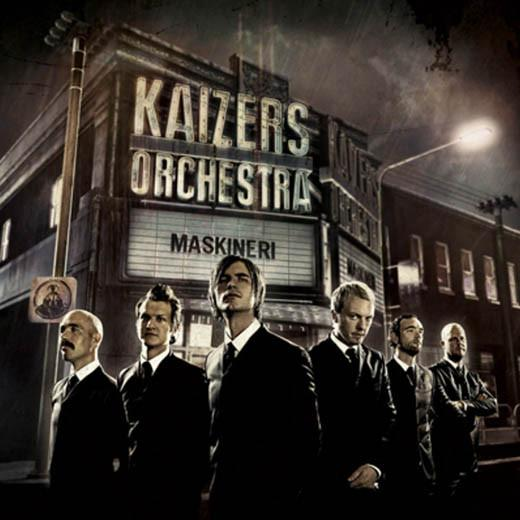

Maskineri
|  |
|
Recorded at Planet Roc Studios, Berlin, November 2007 by Mark Howard
Assistant & additional recordings: Yensin Jahn
Mixed in Jim Henson Studios, Studio A in Los Angeles, California by Mark Howard
Mixing assistant: Matt Serrecchio
Mastered by Gayin Lurssen at Lurssen Mastering, LA
Produced by Janove Ottesen and Mark Howard
Kaizers Orchestra
Janove Ottesen: Vocals
Geir Zahl: Guitars
Terje Winterstø Røthing: Guitars
Øyvind Storesund: Double bass
Helge Risa: Keys, manimba
Rune Solheim: Drums
Additional musicians:
Horns on "Moment", "Bastard Sønn", "Toxic Blod", "Volvo I Mexico", "Ond Sirkel", "Romantisk Salme I F Dur":
Gal Bar-Adon - Trombone
Mathieu Pé - Trumpet, Flugelhorn
Florent Mannant - Tenor and baritone sax
Strings on "Den Andre Er Meg: Andreas Pfaff
Horn/String arrangements: Janove Ottesen
Transcribed by Knut Aabø
Vocals on "Den Andre Er Meg": Ragnhild Winterstø Røthing
Backing vocals on 9mm": Page Turner and Eteonora Barna
Tollak Friestad: Maskineriloop
Yensin Jahn: Claps on "9mm", "Maskineri", "Moment" background vocals on "Med En Gong Eg Når Bånn"
Coverdesign & photos by Gosu Design AS (www.gosu.no)
Art Director & Photography: Bjørn-Harald Myhre
Creative assistant: Terje Winterstø Røthing
Compositing: Kent Løset
CG Graphics: Matt Pain
Takk, danke, merci, thanks!!
Special thanks to Yensin for going the extra mile, Werner and Christ at Planet Roc, Linda Krampe for getting Mark tea and Mars bars, Tascam in Berlin for supplying us with the new digital mixer dm 4800 and to GP2 for supplying their cables and loaning us their radar iz24, Carin at Worlds End Management for making it happen, Nick Schmieder for helping out, Tiger of Sweden for good looks, Rudolf Reim & Petroleum Records, Kim Poulsen and Sony BMG, Eivind Brydey & Vox Management, Thomas Olavsen & Atomic Agency, Tobbe Lorentz & The Agency, Åsmund for maskineriet, Morten Abel for pumpeorgel, John Lilja for mandolin, Petter Stangjordet and Hornaas Musikk, Heidi Kristoffersen, Håvard Gjestvang and Audio Media, Tom Bjørkhaug and ProPerc, Luhtman Norge, Istanbul and Ludwig, Trond Aril Espedal and Suksesslaboratoriet, Kjetil Steinskog, Paal Audestad, Tom Erik Antonsen and Fotophono for Markbass gear, Atle Øksendal, Sigvards Pauna and Sagevik Musikk, Caroline Ingeberg, Em Nordic, Fender Scandinavia, T-Rex engineering, Lingerie Lounge/Steen&Strøm, LaSenza, Liv Marthe Myhre, Marit and Frits Winterstø, Skambankt, Christer Knutsen and Pål Hausken, Inge Schreuder Sigvaldsen and Yellow Film & Videoproduksjon, Gunn & Bris, Daniel Pieper, Bertrand and Alex at LO-FI Merchandise, David Kalish, PAP Stavanger, Sennheiser Nordic, Lydrommet, Asbjørn Myhre, Torkel Stensrud, Erik Samsmark and SonyEricsson, Torill Schia, Stig and Peugeot, Krogh Optikk, Johan Kristian Berntsen, Nils Tore Foss, Tor Sørnes, Don Tollak Friestad and Per Bjørn Olsen, Jesper Lind and Internasjonalen Oslo, Garage Bergen, Cementen, Familien Zahl, Else, Kristin, Elise and Emma Susanne Oliver and Vera, Maria og Ragnhild.
Management: Artist Vision, Eivind Brydøy, eivind@artist.vision
Booking: TimeOut Agency, Thomas Olavsen, thomas @timeout.no
Plateselskap: Petrolium Records
Maskineri er det fjerde albumet til Kaizers Orchestra og ble utgitt 18. februar 2008. Etter tre album med Jørgen Træen var det på tide å prøve noe nytt. Gjennom MySpace ble Kaizers kjent med Mark Howard og bestemte seg for å spille inn album med han i Berlin. På maskineri utfordret Kaizers Orchestras lydbildet sitt, og det ble de hyllet for.